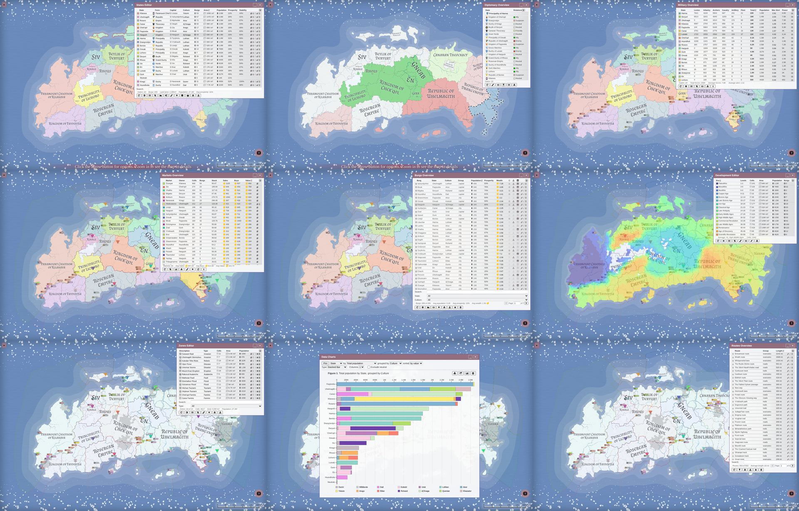
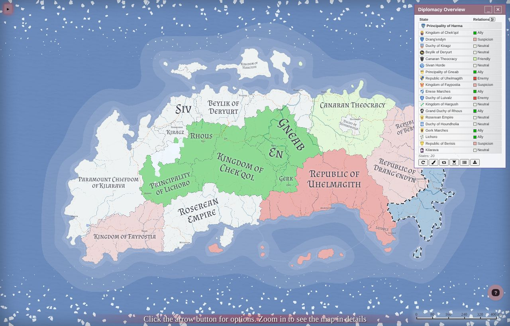
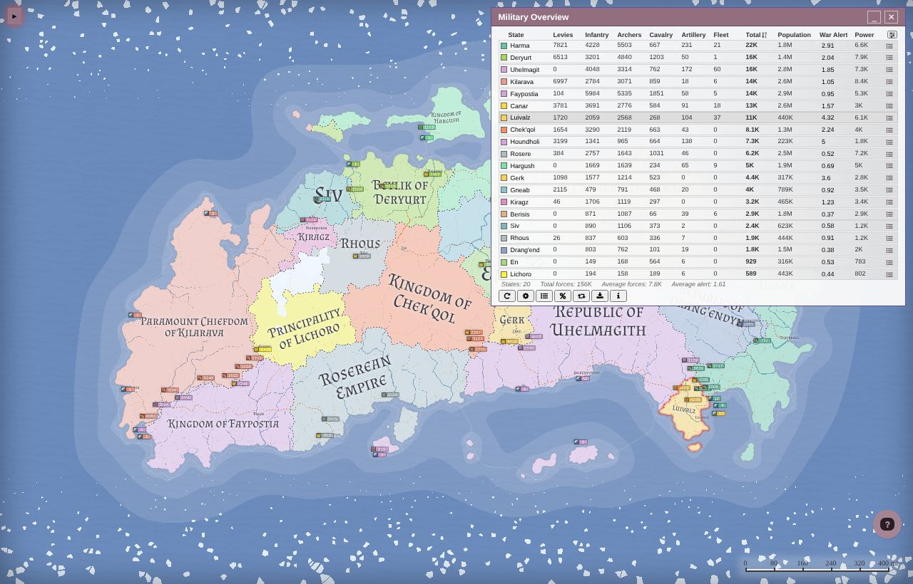
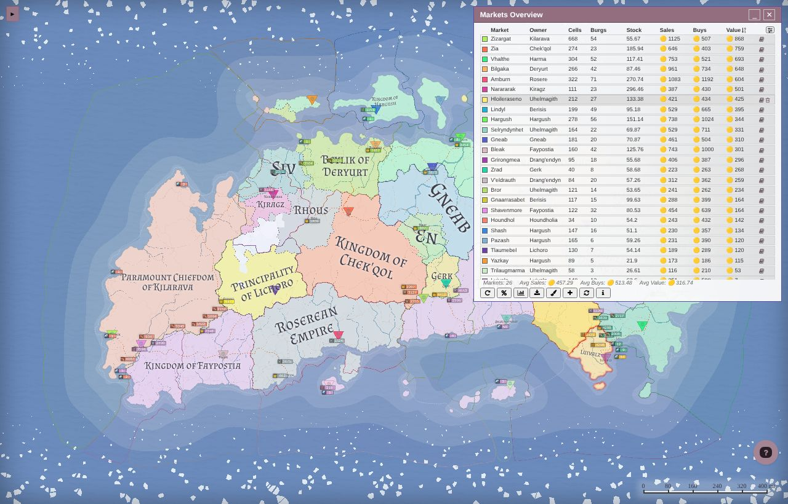
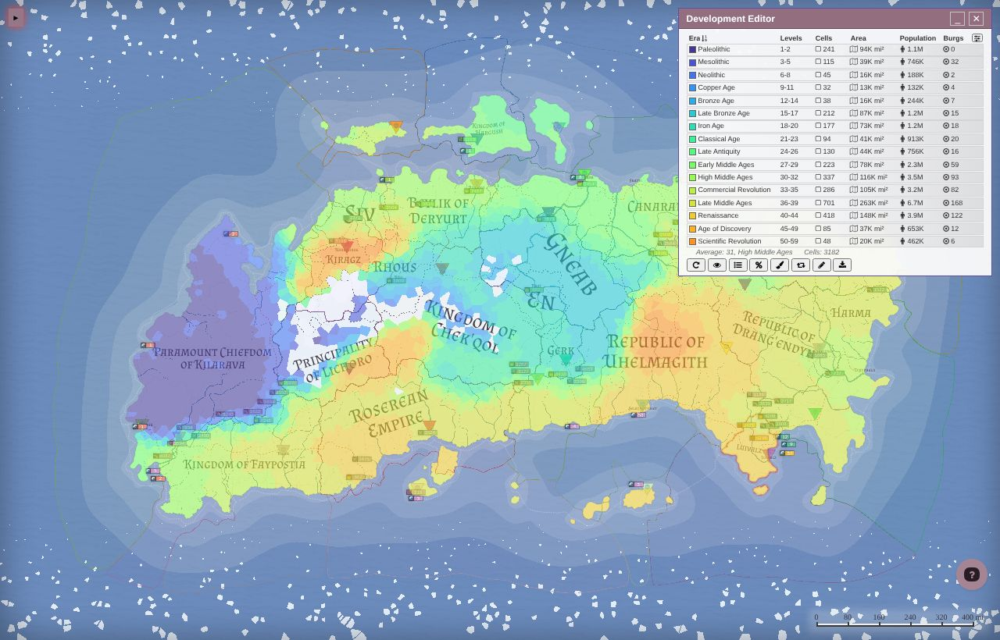

Azgaar の検証(2026-11-15)
概要: 地図ソフトというより、「ある時点の世界の記録」を丸ごと作る道具でした。地形・気候だけでなく、国・外交・軍・経済・市場・出来事・戦役の記録まで持っています。重さの正体は、この経済と軍の計算です。地政学シミュレーターの「何を持つか」の見本として、非常に参考になります。
1. 持っているデータ(実際に動かして取り出した)
| 分野 | 持っているもの |
|---|---|
| 地形・気候 | 標高、気温、降水、川(源流・河口・流量・長さ・流域)、湖、氷、生物の分布(13種。居住のしやすさと開発の度合いつき) |
| 人 | 区画ごとの人口、文化(10前後。開発度・拡張力)、宗教(14前後。神の名・種類) |
| 国 | 名前、政体(帝国・共和国など)、首都、拡張主義の強さ、隣国、国土、予算(宮廷・行政・インフラ・軍・汚職の配分)、税(売上税・人頭税・市場手数料)、関税(国ごと)、国庫、警戒度 |
| 外交 | 国どうしの関係を段階で持つ(同盟・友好・中立・疑念・ライバル・敵・宗主・不明) |
| 軍 | 部隊ごとに、民兵・歩兵・弓兵・騎兵・砲兵の人数、駐屯地、結成の経緯の文章。国ごとに艦隊・戦力・警戒度も集計 |
| 戦役の記録 | 戦争の名前、開始・終了の年、攻めた国・守った国(例:「ヨルドゥヴュルト十字軍」7〜14年) |
| 都市 | 人口、港・城塞・城壁・神殿などの有無、商品ごとの生産量、国庫、繁栄度 |
| 経済 | 市場(約25〜50)、商品ごとの在庫と価格、市場どうしの取引(1万件前後)、街道・小道・航路(450〜1,000本) |
| 出来事 | 区域として、侵攻・布教・十字軍・疫病・災害・噴火・断層・洪水・津波・飢饉。影響を受けた人口つき |
| 時間 | 年号と時代区分(旧石器から科学革命まで)、区画ごとの技術水準(開発度) |
| その他 | 名所(火山・温泉・鉱山・ギルドなど)、旅の記録(襲撃など)、国章 |
取り出した世界は毎回ランダムで、数は世界ごとに違います。
2. 画面で見られる機能

左上から:国の一覧、外交、軍、市場、都市、技術水準、区域(出来事)、グラフ、街道外交(国を選ぶと、関係が色で地図に出る)

軍(国ごとの兵種と戦力)

市場(在庫・売り・買い・価値)

技術水準(時代区分と、地図上の開発の度合い)

出力は、地図ファイル、JSON、GeoJSON、画像(PNG・JPEG・SVG・タイル)、CSV(経済など)に対応しています(ソースで確認)。
3. 重さの検証
| 項目 | 結果 |
|---|---|
| 読み込み | 2.5MB・71ファイル、0.9秒 |
| 世界を作る | 6つの世界で、2.1〜3.9秒(作成1.4〜3.0秒+描画0.3秒)。陸地の区画数(3,900〜10,200)におおむね比例 |
| メモリ | 約37〜57MB、画面の部品は3,400〜5,000個 |
| 操作の滑らかさ | 画面をドラッグして約70コマ/秒(ソフトウェア描画での目安) |
重さの内訳(標準の世界、作成1.4秒のうち): 生産の計算が約4割(0.5秒)、軍が約1割、道と川がそれぞれ1割弱。生産・市場・税・軍といった経済の計算で、全体の半分以上になります。重いのには意味があり、経済と軍を丸ごと計算している代償です。
測った環境:クラウド上の2コアの計算機。iPhone での実測ではありません。
できなかった検証: 区画数を5万〜10万に増やした場合の重さは、設定の変更が効かず、測れていません(すべて標準の約1万点で測定)。改めて方法を調べる必要があります。
4. シミュレーターへの使い道(私の見立て)
- 地政学: 国の持ち物(政体・拡張主義・予算・軍の兵種構成・警戒度)、外交の段階、戦役の記録(戦争名・年・攻守)、区域の出来事が、そのまま「何を持つか」の見本になります。
- 経済: 商品・市場・在庫・価格・取引・関税・予算の持ち方が見本になります。
- 天候: 気温と降水を区画ごとに持ち、生物の分布へつなげる形が見本になります。季節や天気の変化は持っていないので、そこは自前です。
- 注意: 生成時に一時点の結果を計算して記録する作りで、世界を時間とともに動かし続ける仕組みは見当たりませんでした(私の見立て)。「何を持つか」は参考になりますが、「どう動かすか」は自前で考える部分です。